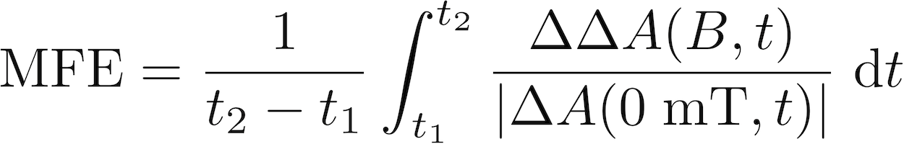
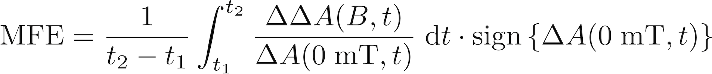

A special feature only used for a minority of TA data is the handling of measurements of the magnetic field effect (MFE). In this case, TA time traces have been recorded both without and with a static field applied.
The "MFE" panel lets you perform the usual tasks on those data, such as showing the MF spectra (i.e. the data recorded with static magnetic field), subtracting traces from each other such as to show the MFE itself, or, in case of a very weak MFE, adding both traces (MF and w/o MF) together to enhance S/N.
A short description of all the controls of the panel.
This menu determines what is shown. In case of MFE data, i.e. data that were recorded both with an external magnetic field (MF) switched on (MFon) and without such a field (MFoff), there are three traces that can be shown:
Additionally, there are two sensible permutations of several traces being shown at the same time:
Hint: If you feel that these two permutations are not enough, there is a simple way to achieve any possible display of different traces - simply duplicate datasets (using the "Duplicate" button in the "Display" panel) and set the MFE display mode for each of these datasets according to your needs.
As a last, rather special case, there is the possibility to add MFoff and MFon data together for a better signal-to-noise ratio. This is achieved with the display mode
Normally, the line settings are controlled via the "Display" panel (third page). Still, you can set there the settings that apply only for the MFoff trace (as this is the trace that's there with every sort of TA data).
For the MFE data, you can control the line settings for each of the traces separately.
Note: Be aware that the settings in the "Display" panel only apply to the MFoff trace. Therefore, don't be surprised if you change there something and nothing happens due to having the MFE display mode set to not showing the MFoff trace.
To calculate the absolute MFE, normally the following formula is used:

Due to possible issues with very noisy datasets where taking the absolute of the MFon trace would cause problems, a slightly altered version of the above formula is used that gives as well the correct sign of the MFE:

The MFE may also be calculated as a function of time: at any time t the instantaneous MFE can be calculated as the ratio of DeltaDeltaA(B,t) and DeltaA(0 mT,t). However, for noisy data, or at points where DeltaA(0 mT,t) is close to zero, this can lead to large variations in the calculated MFE. Therefore, use of time-averaged MFEs is preferential.